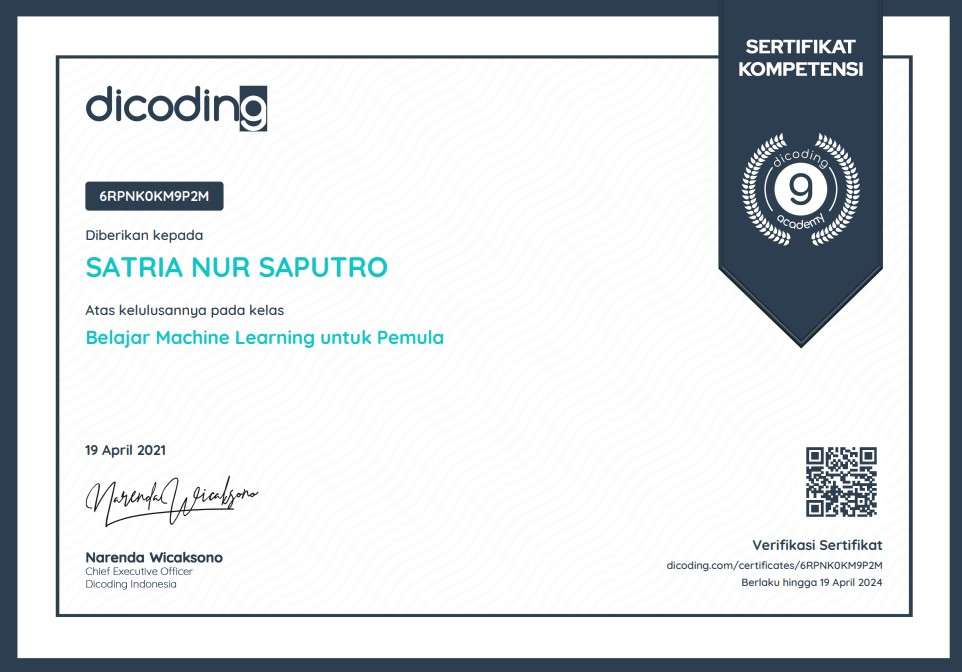
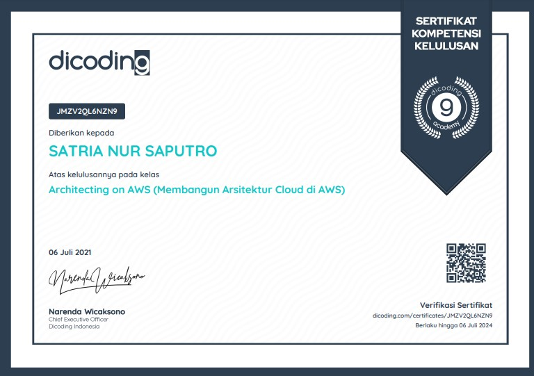

Certificate

Pengenalan Backend dengan pengenalan environment node.js dan restfull API dan beberapa library dan frameworks

Javascripts
Javascripts sebagai kompetensi bahasa untuk frontend dan backend

Arsitektur AWS
Belajar lebih mendalam mengenai cloud dari aws sampai cara mendeploy sebuah webiste dan keamanan-nya